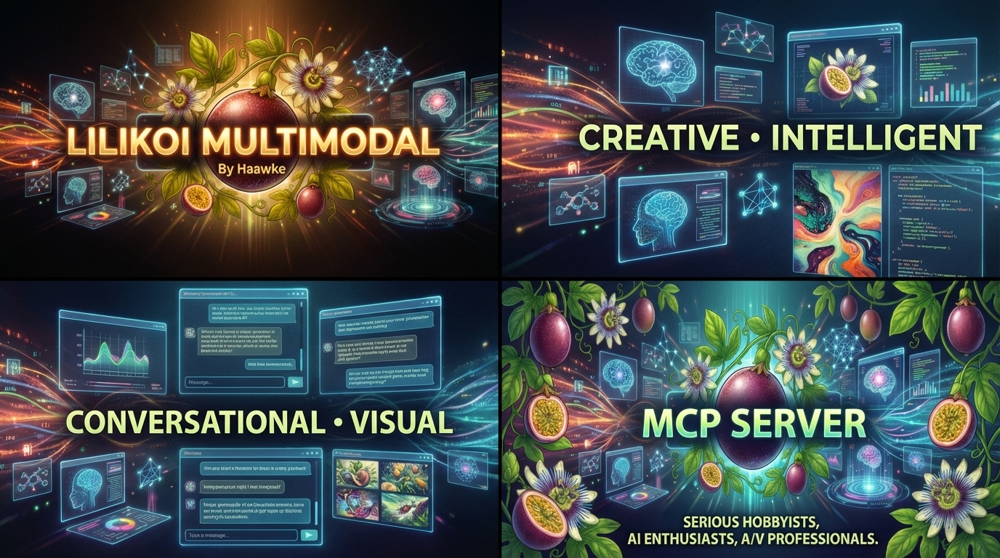

Our Journey
From analog roots to neural frontiers: The evolution of Haawke.
-
Debut of Spatial Audio
We introduced our 3D spatial audio system in San Francisco on New Year's Eve at The Design Center, Toontown. We blew some minds.
View Flyer
-
Tours & ReleasesToured with Moby, Psychic TV, and more. Released four audio CDs on Silent Records.
-
Burning Man OriginsFounded the music element of Burning Man as the first sound camp and DJs.
Read: Burning Man's First Sound Camp
-
Global RhythmsLived in India for six months making music with trancemasters from around the world.
-
Visual FX RootsInterned at San Francisco DV Garage under Alex Lindsey (Ex-ILM Rebel Mac Unit), learning commercial 3D and motion graphics techniques.
-
12 Years in ParadiseOwned and operated Craig Ellenwood Photography in Honolulu, Hawaii (2003-2015).
View Portfolio
-
Inoculate MediaLaunched Inoculate.Media in Vancouver, BC. Built video pipelines for TV/Film and began exploring AI/ML.
Visit Inoculate.Media
-
Las Vegas & Area 15Relocated to Las Vegas. Created large-scale projection mapping and immersive environments at Area 15.
-
Haawke Neural TechnologyLaunched Haawke Neural Technology to bring AI/ML applications to large-scale events and performances.
Supported by Google's TPU Research Cloud (TRC).
-
 Lilikoi Launch
Lilikoi LaunchLaunched Lilikoi, the world's first AI-integrated production-grade A/V software.

-
Craig EllenwoodDownload Resume